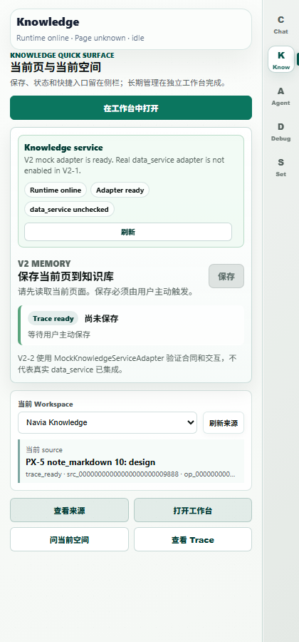
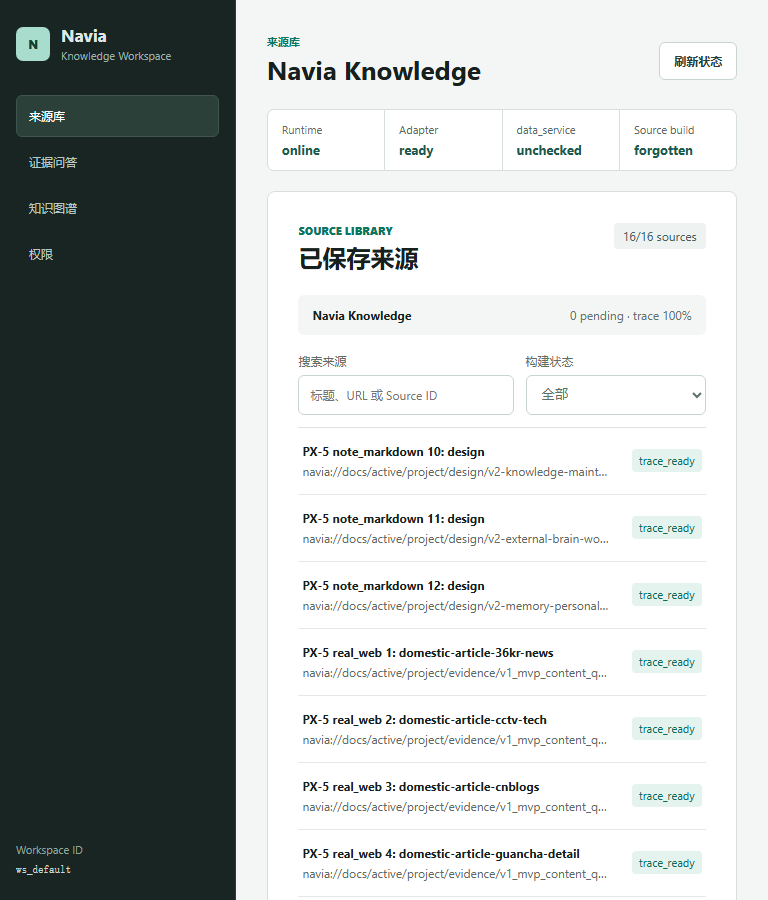
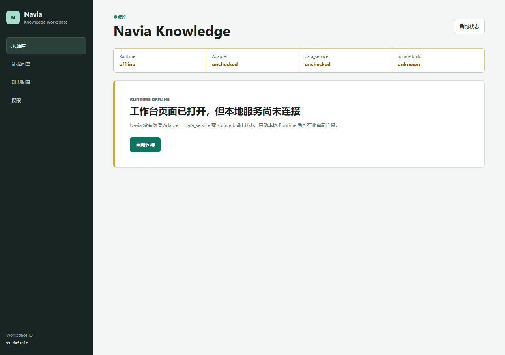

<!doctype html><html lang="zh-CN"><meta charset="utf-8"><title>V2-PX-6 人工出门审查</title><style>body{margin:0;font:15px system-ui;color:#17211e;background:#f5f7f6}main{max-width:1180px;margin:auto;background:#fff;padding:32px;min-height:100vh}h1{font-size:28px}.gate{border-left:4px solid #b37b00;background:#fff7df;padding:14px}.stats{display:grid;grid-template-columns:repeat(4,1fr);gap:8px}.stats div{border:1px solid #cbd6d2;padding:12px}.gallery{display:grid;grid-template-columns:repeat(2,minmax(0,1fr));gap:12px}figure{margin:0;border:1px solid #ccd6d2;padding:8px}img{width:100%;height:auto}table{width:100%;border-collapse:collapse}td,th{border:1px solid #ccd6d2;padding:8px;text-align:left}@media(max-width:700px){.stats,.gallery{grid-template-columns:1fr}}</style><main><h1>V2-PX-6 人工出门审查</h1><p class="gate">机器验收已通过；最终产品报告仍为未通过，等待人类完成下列体验核查并签署。</p><section class="stats"><div><strong>12</strong><br>真实来源</div><div><strong>39</strong><br>结构场景</div><div><strong>77/77</strong><br>Chrome 断言</div><div><strong>0/0</strong><br>Axe serious/critical</div></section><h2>范围</h2><table><tr><th>已证明</th><td>双容器入口、五路由四恢复、Workspace 管理组件、权限、持久遗忘、四域状态、响应式与可访问性自动检查</td></tr><tr><th>待人工</th><td>可读性、信息层级、操作手感、异常解释、最终声明边界</td></tr><tr><th>未承诺</th><td>真实 data_service、完整外脑、RAG、自动遗忘/Dream Cycle、V3 视频理解</td></tr></table><h2>截图证据</h2><div class="gallery"><figure><figcaption>sidepanel-360.png</figcaption></figure><figure><figcaption>sidepanel-420.png</figcaption></figure><figure><figcaption>workspace-library-768.png</figcaption></figure><figure><figcaption>workspace-library-1280.png</figcaption></figure><figure><figcaption>workspace-source-detail-1280.png</figcaption></figure><figure><figcaption>workspace-forget-1-1280.png</figcaption></figure><figure><figcaption>workspace-runtime-offline-1280.png</figcaption></figure></div><h2>最小体验路径</h2><ol><li>Side Panel 的 Knowledge 页点击“打开工作台”。</li><li>在来源库进入详情，打开 Trace，再进入 Ask 和 Graph。</li><li>授权并撤销一个测试路径。</li><li>对一次性来源执行 Forget，核对四面验证和重开错误。</li><li>审阅服务离线/阻塞截图和四种 viewport。</li></ol><p>完整机器报告：<a href="../px-5/acceptance-report.html">PX-5 自动化验收候选</a></p></main></html>
